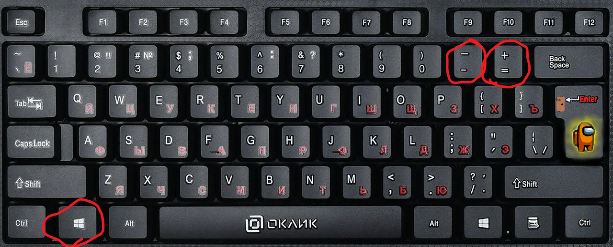

Video Pad
Video Pad-это приложение в котором вы можете радактировать видео,фото и аудио.
Функции
VideoPad поддерживает редко используемые форматы файлов , включая Audio Video Interleave (AVI), Windows Media Video (WMV), 3GP и DivX . Он поддерживает прямую загрузку видео на YouTube, Flickr и Facebook. (Чтобы увеличить экран на пк, нажмите windows плюс +/-)
VideoPad использует два экрана: первый для предварительного просмотра выбранных фрагментов видео и аудио, а второй для просмотра всего трека. Приложение поддерживает несколько видеоэффектов, включая эффекты света, цвета, переходов и текста.
VideoPad предположительно пробная версия . Бесплатная версия имеет ограниченные возможности, в частности, поддерживается экспорт только в форматах AVI и WMV, в то время как платная версия имеет более расширенные функции. VideoPad Master Edition поддерживает плагины, а бесплатная версия - нет. Платная версия не ограничивает количество одновременных видеодорожек, но бесплатная версия позволяет использовать не более двух одновременных дорожек и ограничивает параметры экспорта файлов после истечения пробного периода. Премиум-версия позволяет пользователям создавать диски Blu-ray .
VideoPad Video Edition, добавлять в контекстное меню проводника ненужное ПО, ссылающееся на «Извлечь с помощью Express Zip» (устанавливается по запросу), связанное с 7z, bz2, cab, gz, iso, img, rar, tar, tar.gz, tgz.
Приём
> VideoPad получил в целом положительные отзывы от различных веб-сайтов и агрегаторов, таких как CNET и TopTenReviews , но было отмечено, что он уязвим для проблемы с рендерингом.
Обозреватель Redding Record Searchlight Андреа Элдридж писала в 2012 году, что «простой в использовании VideoPad предоставляет расширенные возможности для новичков». Она сказала, что в VideoPad есть функция закадровый голос , которой не было в Windows Movie Maker . Эта функция позволяет пользователям либо записывать собственное повествование, либо загружать существующие записи. Softonic.com похвалил VideoPad за то, что он «простой» и «легкий в использовании», но отметил, что «более продвинутые пользователи определенно сочтут его слишком простым. »и посетовал, что в программе« всего три [перехода] ». В настоящее время у VideoPad есть намного больше.
Дэнни Чедвик из первой десятки обзоров оценил VideoPad на 6,15 из 10. Он похвалил приложение за то, что оно «отлично подходит для новичков», но сказал, что ему не хватало «многих переходов или дополнительных функций, которые являются стандартными для подобных приложений».
Максимальный участник ПК Бен Ким заявил в 2014 году, что «VideoPad легко лучший доступный бесплатный видеоредактор ». Ким написал, что VideoPad - это «звездный редактор, который сумел упаковать почти непристойное количество функций в удивительно удобоваримый пакет».